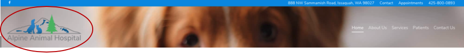
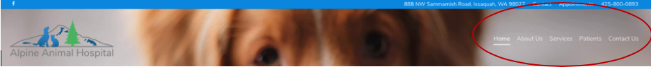

Alpine Animal Hospital is a local veterinary hospital located in Issaquah Washington. Its website is https://www.alpineanimal.com. My analysis focuses on several questions to assess the usability of the site.
Are navigational elements clear?
- Site ID
- The sections of the site
- Utilities
- Method to get Home
- Method to Search
It has a good site id of the clinic’s logo, located in the upper left-hand corner. It clearly shows that this site is related to veterinary services. It provides a clear cue to the user that this is the website for Alpine Animal Hospital.
The primary navigation is located on the upper right-side of the page. It includes the things that I would expect to see on a veterinarian’s website such as home, about us, services, patients and contact us. They all have sub menus but they don’t act consistently when clicked on. On some, clicking on the section link brings you to a new page while others only have sub menus and you have to click on the sub menu to access a sub page.
There are utilities in the blue bar along the top, but it’s kind of hidden between the address and phone number which are duplicated in the footer. There are additional utilities in the footer, however some like the pet portal generate a ‘404’ error page.

There is a clear home button and the main menu is accessible from most pages except the online store which opens up a new browser tab. This page does not have the same navigation. It took me a second to realize that a new tab had opened which confused me about getting back to other parts of the website.

There is only a search bar on the online store page. It’s a pretty simple website so it is not that hard to find things.
Is content presented with clear hierarchies?
The site does a good job creating hierarchies through the use of the menu. For each main topic, there is a dropdown menu that breaks up the subtopics. They use different size fonts and colors to distinguish the main topic of the page with the subtopics.
Do I know what I'm looking at on each page?
- Page Names
- Page navigation
- Page content
Each page has a page name that matches the menu used to access it. It also nicely frames the content on each page.
Except the online store, each page has the site id as well as the content and utility menus. Your location in the content menu is underlined green and the sub menu location is highlighted blue. The page doesn’t use breadcrumbs but the site is simple enough that they are not needed.

The material is what I would expect to see based on the name of the page. It seems very well organized and provides sufficient information on each topic.
General usability
Overall the website is easy to navigate but there are some things like white lettering being used on a light back ground on the homepage that could be improved. The other thing would be getting rid of the pop-up chat box which can be distracting. It was unfortunate that the pet portal didn’t work because having access to records and appointments would be very helpful. If they are not planning on fixing it, the feature should be removed from the website.